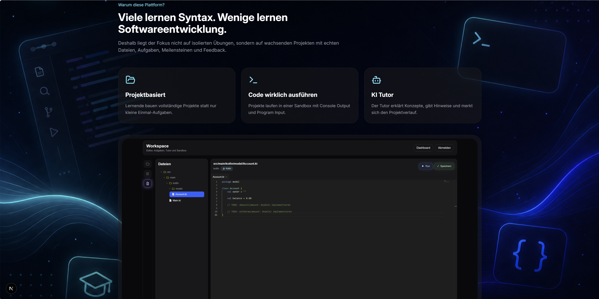
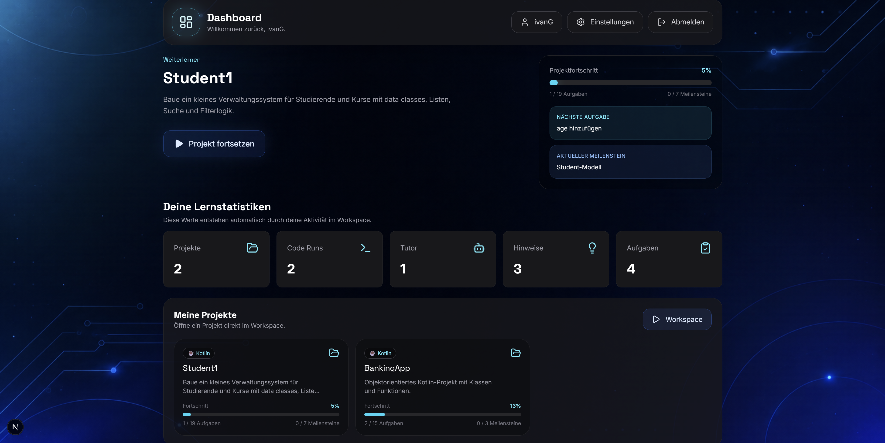
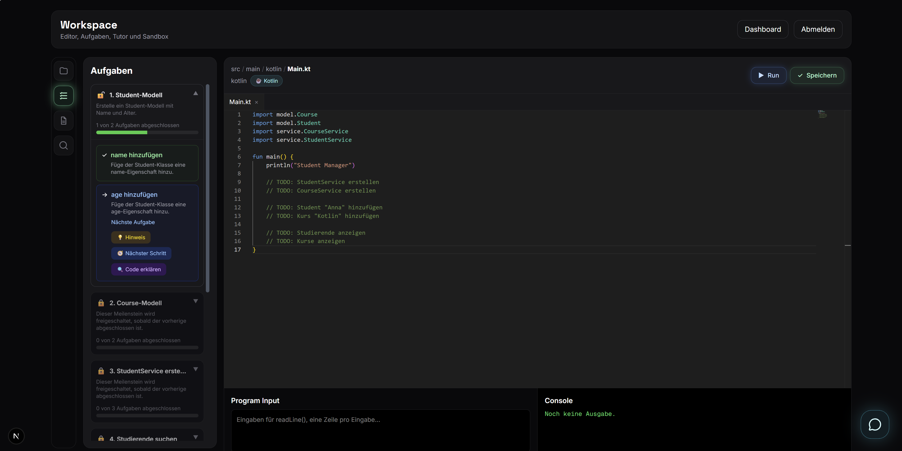

Overview
KI Coding is a complete learning platform where users learn programming by building real, growing software projects instead of solving isolated exercises. The platform combines project management, a multi-file code workspace, task and milestone logic, sandbox execution, progress tracking, and an AI-powered tutor.
Problem
Many coding platforms rely on small, disconnected exercises. This often misses the reality of software development: project structure, multiple files, refactoring, debugging, console output, and long-term learning progress. KI Coding addresses this with a project-based approach, persistent storage, and context-aware AI support.
Architecture Approach
Project-Based Learning
Learners work on real projects with files, folders, milestones, and tasks instead of solving isolated code snippets.
Persistent Workspace
Projects, files, progress, profile data, settings, and tutor history are persisted and can be resumed later.
Context-Aware AI Tutor
The tutor understands the current task, active file, project structure, learning progress, and chat history while avoiding complete solution dumps.
Sandbox & Validation
Code can be executed directly in the workspace. Tasks are validated through technical checks, console output, and project files.
Technical Features
The platform includes user management, login, profile and settings dialogs, project-based templates for Kotlin and Python, progress evaluation, search, command palette, tutor memory, and import/export support using a custom .kicoding project format.
Product Interface





Challenges
The main challenge was to build more than an editor with an AI chat: authentication, persistent projects, file management, task logic, sandbox execution, progress tracking, tutor memory, and guardrails had to work together as one coherent learning system.
Learnings
A strong AI learning platform is not created by adding a language model alone. It requires context, structure, and clear product logic. The most important design decisions were separating deterministic validation from AI assistance, persisting learning state reliably, and building a tutor that supports learning without bypassing the learning process through complete solutions.